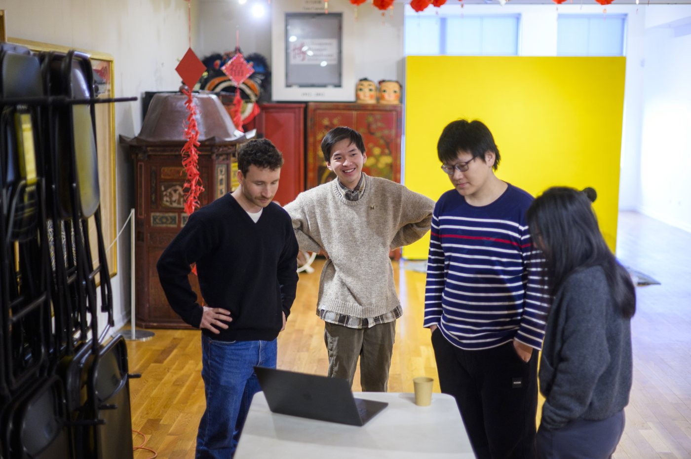
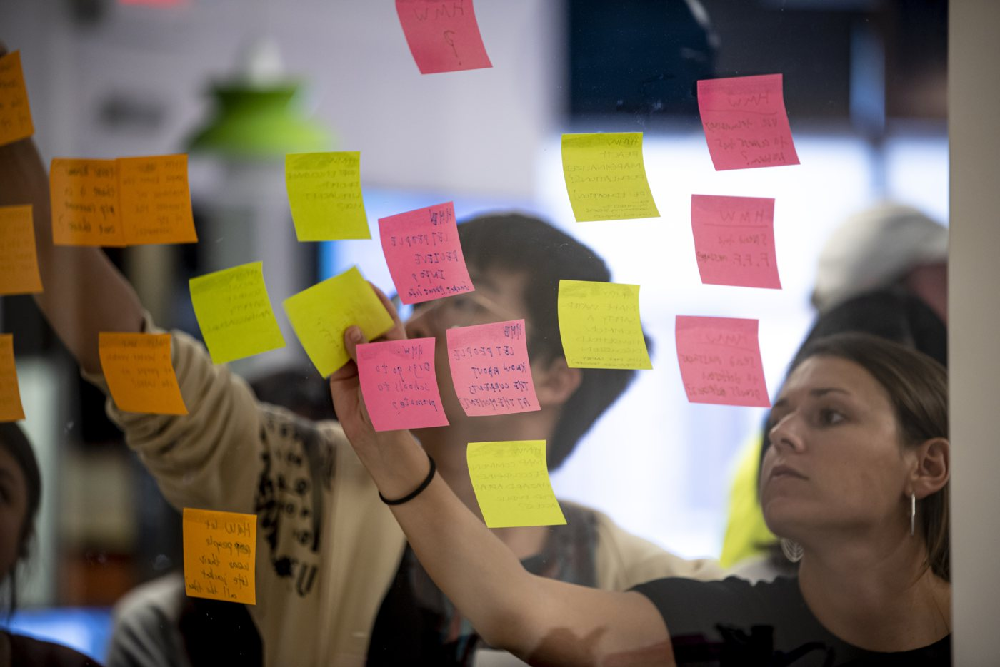

Begin with Purpose and Shared Expectations

Starting an engaged learning experience means building a strong foundation for collaboration, learning, and
meaningful community impact. Before the first meeting or project task, take time to understand why the work
matters, who it is intended to serve, and how your team can contribute responsibly.
Steps for Starting the Experience
01Understand the Project Context
Learn about the partner, community, intended users, and goals of the project before deciding how your team
will contribute. Review the available background information, identify the people affected by the work, and
ask questions about the partner's priorities, constraints, and definition of success. Enter the project as a
collaborator and learner rather than assuming that your first idea is the solution.
02Build Your Team Agreement
Discuss team roles, communication practices, availability, responsibilities, and how you will make decisions
together. Agree on where project files will be stored, how meetings and updates will work, and what your team
will do when someone needs support or a deadline changes. A clear agreement makes participation more
equitable and gives the team a shared process for resolving conflict.
03Set Goals and Confirm Expectations
Identify what you hope to learn, confirm the project's scope and deliverables, and make sure your team's
expectations align with the partner's needs. Separate required outcomes from ideas that can be explored later,
then document timelines, feedback points, and responsibilities. Confirm these details with the partner before
beginning substantial work so that the project remains realistic and mutually beneficial.

Resources for Your First Project Meeting
Bring these materials to your first team or partner meeting. Record decisions together and confirm responsibilities before beginning substantial work.
Next: During Your Experience